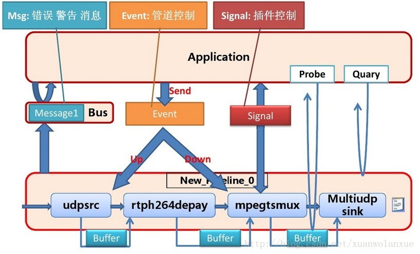

gstreamer学习笔记(3):message,event,signal区别
注：本篇笔记以gstreamer 1.8.1 版本为蓝本，若有出入的地方，请确认版本信息
message
在gstreamer中，message或者说Bus message（因为message都是在GSTBus上传递的），是用于gstreamer和application之间交互用的，比如当一个文件播放结束的时候，gstreamer会发一个EOS的message到GstBus上，如果app有去侦听(函数gst_bus_add_watch)，那么在处理消息的callback函数中就可以收到这个消息。
event
Most of the event API is used inside plugins. Applications usually only construct and use seek events. To do that gst_event_new_seek() is used to create a seek event. It takes the needed parameters to specify seeking time and mode.
以上是关于GstEvent描述的一部分内容，也就是说，一般来说event是用于gstreamer内部element与element之间（或者说pad与pad之间）传递事件的，比如source element的数据已经结束了，那么他就会发出一个EOS event，然后顺着pipeline依次向down stream的方向传递， 这些elements可以得到通知，从而做一些cleanup的工作，当最终所有的sink element都收到并处理了这个EOS event之后，gstreamer内部就是产生一条GSTMessage，并post至GstBus，如果APP有监听，那么它就能知道当前播放已经结束了。
而对于APP能用的就只有一个seek event。
signal
signal不是gstreamer特有的东西，它是来自于GObject体系，是用于app和GObject之间进行交互的一种机制。在gstreamer中，element本身也是gobject，所以，通过signal，就可以将app和element联系起来。
当element发生了一些事情相让app知道时，就可以用signal的方式来通知app比如动态创建了一个Pad。当然也可以在element与element之间使用， 比如在Gstplaybin当中就会侦听uridecoderbin发出来的autoplug-factories，autoplug-select等信号。
signal和Bus message不同，bus message是pipeline上的，一般是app和pipeline交互的一种方法。signal则具体到了每个element。
整体框图如（此图来自网络）：
